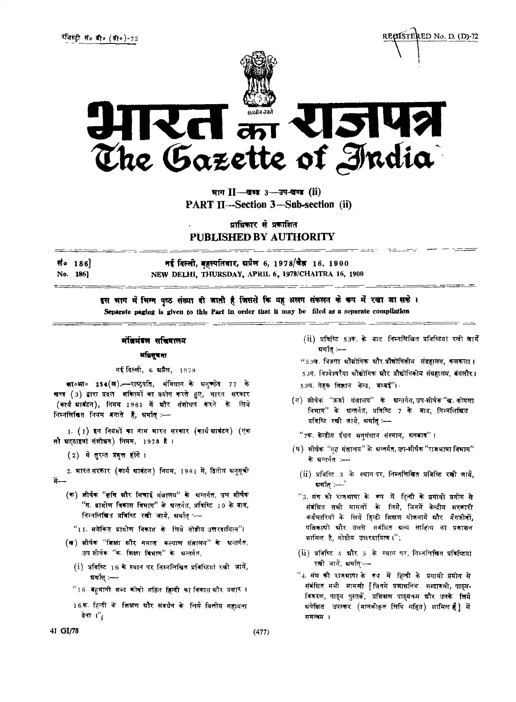
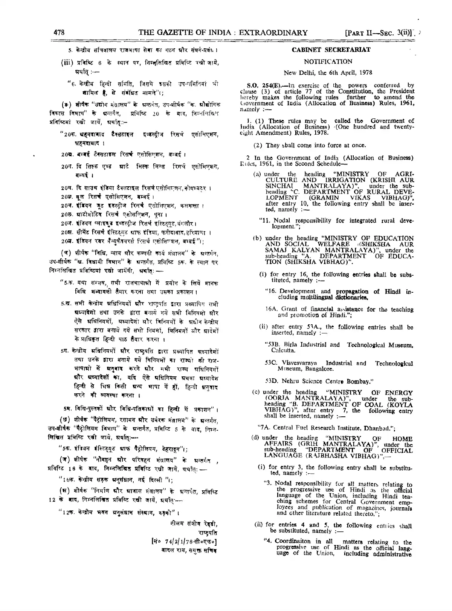
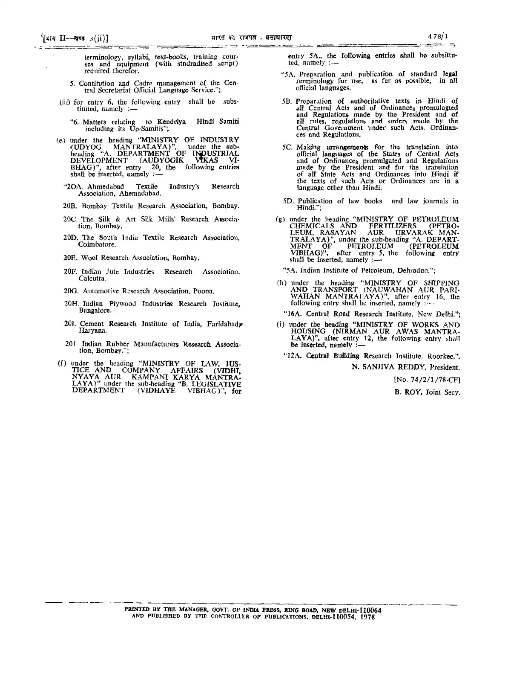

Amendment #128 (S.O. 254(E), 1978)
12 changes: 0 to the First Schedule, 12 to the Second Schedule. 11 applied1 not applied
The order, page by page
Page 1 of 4

Page 2 of 4

123456after Schedule 2 › MINISTRY OF AGRICULTURE AND IRRIGATION › DEPARTMENT OF RURAL DEVELOPMENT › entry 10
- 11. Nodal responsibility for integrated rural development.
not applied (the change could not be placed in the Rules as read; see How this document was read)
Schedule 2 › MINISTRY OF EDUCATION AND SOCIAL WELFARE › DEPARTMENT OF EDUCATION › entry 16
- 16. Development and propagation of Hindi including multilingual dlotionarica.
- 16A. Grant of financial assistance for the teaching and promotion of Hindi.
applied at schedule 2 › ministry MINISTRY OF EDUCATION AND SOCIAL WELFARE › department A › entry 16 in the Rules after #128
after Schedule 2 › MINISTRY OF EDUCATION AND SOCIAL WELFARE › DEPARTMENT OF EDUCATION › entry 53A
- 53B. Birla Industrial and Technological Museum Calcutta.
- 53C. Visvesvaraya Industrial and Technological Museum, Bangalore.
- 53D. Nehru Science Centre Bombay.
applied at schedule 2 › ministry MINISTRY OF EDUCATION AND SOCIAL WELFARE › department A › group_heading C › entry 53B in the Rules after #128
after Schedule 2 › MINISTRY OF ENERGY › DEPARTMENT OF COAL › entry 7
- 7A. Central Fuel Research Institute, Dhanbad.
applied at schedule 2 › ministry MINISTRY OF ENERGY (0ORJA MANTRALAYA) › department B › entry 7A in the Rules after #128
Schedule 2 › MINISTRY OF HOME AFFAIRS › DEPARTMENT OF OFFICIAL. LANGUAGE › entry 3
- 43. Nodal responsibility for all matters relating to the progressive use of Hindi as the official language of the Union, including Hindi teaching schemes for Central Government employees and publication of magazines, journals and other literature related thereto.
applied at schedule 2 › ministry MINISTRY OF HOME AFFAIRS › department DEPARTMENT OF OFFICIAL LANGUAGE › entry 3 in the Rules after #128
Schedule 2 › MINISTRY OF HOME AFFAIRS › DEPARTMENT OF OFFICIAL. LANGUAGE › entry 4; Schedule 2 › MINISTRY OF HOME AFFAIRS › DEPARTMENT OF OFFICIAL. LANGUAGE › entry 5
- 4. Coordinaiton in all matters relating to the progressive use of Hindi as the official language of the Union, including administrative terminology, syllabi, text-books, training courses and equipment (with stndradised script) required therefor.
- 5. Contitution and Cadre management of the Central Secretariat Official Language Service.
applied at schedule 2 › ministry MINISTRY OF HOME AFFAIRS › department DEPARTMENT OF OFFICIAL LANGUAGE › entry 4 in the Rules after #128
read page break
Page 3 of 4

789101112Schedule 2 › MINISTRY OF HOME AFFAIRS › DEPARTMENT OF OFFICIAL. LANGUAGE › entry 6
- 6. Matters relating to Kendriya Hindi Samiti including its Up-Samitis
applied at schedule 2 › ministry MINISTRY OF HOME AFFAIRS › department DEPARTMENT OF OFFICIAL LANGUAGE › entry 6 in the Rules after #128
after Schedule 2 › MINISTRY OF INDUSTRY › DEPARTMENT OF INDUSTRIAL DEVELOPMENT › entry 20
- 20A. Ahmedabad Textile Industry's Research Association, Ahemadabad.
- 20B. Bombay Textile Research Association, Bombay.
- 20C. The Silk & Art Silk Mills' Research Association, Bombay.
- 20D. The South India Textile Research Association Coimbatore.
- 20E. Wool Research Association, Bombay.
- 20F. Indian Jute Industries Research Association. Calcutta.
and 3 more
- 20G. Automotive Research Association, Poona.
- 20H. Indian Plywood Industries Research Institute Bangalore.
- 201. Cement Research Institute of India, Faridabad Haryana. 20 Indian Rubber Manufacturers Research Association, Bombay.
applied at schedule 2 › ministry MINISTRY OF INDUSTRY › department A › group_heading L › entry 20A in the Rules after #128
Schedule 2 › MINISTRY OF LAW, JUSTICE AND COMPANY AFFAIRS › LEGISLATIVE DEPARTMENT › entry 5A
- 5A. Preparation and publication of standard legal terminology for use, as far as possible, in all official languages.
- 5B. Preparation of authoritative texts in Hindi of ull Central Acts and of Ordinances promulagted and Regulations made by the President and of all rules, regulations and orders made by the Central Government under such Acts. Ordinances and Regulations.
- SC. Making arrangements for the translation into official languages of the States of Central Acts and of Ordinances promulgated and Regulations made by the President and for the translation of all State Acts and Ordinances into Hindi if the texts of such Acts or Ordinances are in a language other than…
- 5D. Publication of law books and law journals in Hindi.
applied at schedule 2 › ministry MINISTRY OF LAW. JUSTICE AND COMPANY AFFAIRS › department B › entry 5A in the Rules after #128
after Schedule 2 › MINISTRY OF PETROLEUM CHEMICALS AND FERTILIZERS › DEPARTMENT OF PETROLEUM › entry 5
- 5A. Indian Institute of Petroleum, Dehradun.
applied at schedule 2 › ministry MINISTRY OF PETROLEUM, CHEMICALS AND FERTILIZERS › department A › entry 5A in the Rules after #128
after Schedule 2 › MINISTRY OF SHIPPING AND TRANSPORT › entry 16
- 16A. Central Road Research Institute, New Delhi.
applied at schedule 2 › ministry Ministry of Shipping and Transport › group_heading IV › entry 16A in the Rules after #128
after Schedule 2 › MINISTRY OF WORKS AND HOUSING › entry 12
- 12A. Central Building Research Institute, Roorkee.
applied at schedule 2 › ministry MINISTRY OF WORKS AND HOUSING › entry 12A in the Rules after #128
Page 4 of 4
How this document was read
Known issues
| Change | Issue | Known as |
|---|---|---|
| 1 | change 1: no department DEPARTMENT OF RURAL DEVELOPMENT under schedule 2 › ministry MINISTRY OF AGRICULTURE AND IRRIGATION | Agriculture's departments |
From the Government of India (Allocation of Business) Rules, 1961 and their amendments, as published by the Cabinet Secretariat (cabsec.gov.in), read by orgpedia. The readings of the older scanned gazettes have known gaps.